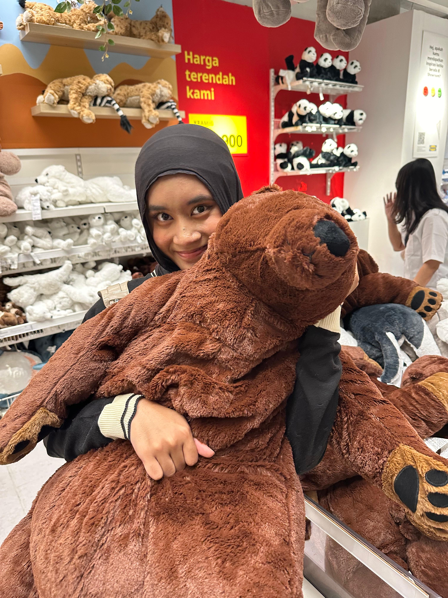

8,500+ student records managed
Structured collection, validation, and coordination across nine departments at ITSCAMP 2026.
Informatics student at ITS
Building at the intersection of technology, administration, and team coordination.

I am an Informatics Engineering student who combines technical thinking with hands-on experience in data management, finance, and cross-team operations.
Structured collection, validation, and coordination across nine departments at ITSCAMP 2026.
Corporate banking and financial records across more than 20 software projects.
Registration workflows, PostgreSQL, technical competition servers, and organized digital hubs.
Selected roles where careful systems and reliable coordination made the work move.
Manage cash flow, corporate banking, automated profit sharing, and audit-ready transaction records for a growing software team.
Maintain databases for cabinet leaders, staff, and delegates while designing registration systems for an international conference.
Coordinate participant relations across three national competitions, produce guidebooks, and support the event's technical infrastructure.
Migrated more than 200 invoices from manual records to digital formats while learning operational systems inside an IT firm.
Institut Teknologi Sepuluh Nopember
Expected 2029
Best Team Project, HMTC ITS Bluecamp 2026
Top 10 on the DSA leaderboard among 300+ students
Have a data, technology, or operations challenge?